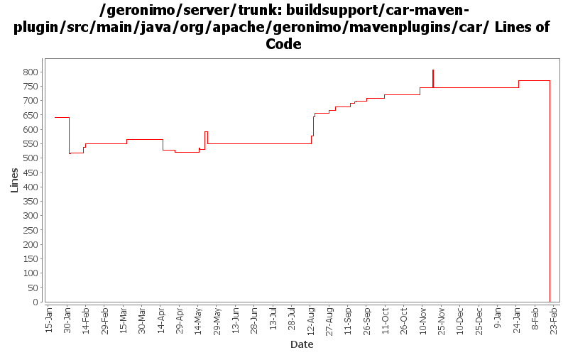

[root]/buildsupport/car-maven-plugin/src/main/java/org/apache/geronimo/mavenplugins/car

| Author | Changes | Lines of Code | Lines per Change |
|---|---|---|---|
| Totals | 124 (100.0%) | 1288 (100.0%) | 10.3 |
| djencks | 94 (75.8%) | 1135 (88.1%) | 12.0 |
| gawor | 6 (4.8%) | 79 (6.1%) | 13.1 |
| gdamour | 3 (2.4%) | 48 (3.7%) | 16.0 |
| linsun | 2 (1.6%) | 21 (1.6%) | 10.5 |
| jdillon | 18 (14.5%) | 4 (0.3%) | 0.2 |
| jlaskowski | 1 (0.8%) | 1 (0.1%) | 1.0 |
GERONIMO-4538 Move stuff around so framework is self contained and builds the framework server. No groupId changes in this revision in case people dont like this change
0 lines of code changed in 22 files:
GERONIMO-4522 filter dependency history using maven, also switch to maven filtering from velocity for plan filtering
91 lines of code changed in 3 files:
header fixes (Rev, Date)
1 lines of code changed in 1 file:
maintain order of dependencies - should fix the server start up problem on ibm jdk
2 lines of code changed in 1 file:
revert changes made in r718644
2 lines of code changed in 2 files:
improve manifest classpath generation (GERONIMO-4417)
63 lines of code changed in 2 files:
When a ConfigurationData is loaded from a ConfigurationStore, its dependencies are transformed through the execution of Groovy scripts matching the pattern Dependencies(.*).groovy located in the same directory than the configuration being loaded.
Also a ConfigurationDataTransformer gets attached to the ConfigurationData so that when GBeans are loaded subsequently when the Configuration ClassLoader is available they can be transformed through the execution of Groovy scripts matching the pattern GBeans(.*).groovy located in the same directory than the configuration being loaded.
(GERONIMO-4401) Extension of configuration dependencies and gbeans via Groovy scripts
0 lines of code changed in 2 files:
Improvide error message and save dependency tree listing so that it is easier to refer back to it following a dependency change as per David J's advice.
(GERONIMO-4400) Improve error message of DependencyChangeMojo
48 lines of code changed in 1 file:
GERONIMO-4346 c-m-p leaves invalid plugin in plugin catalog and doesn't update plugin catalog when desp is updated
13 lines of code changed in 1 file:
GERONIMO-4328 Fix problems with installed plugins tracking: c-m-p assembly now tracks plugins, PluginInstallerGBean is now configured to track plugins, and bug fixed in save method
10 lines of code changed in 1 file:
GERONIMO-4318 try to indicate when plugins have been installed in the current server, irrespective of whether they are in the repos
1 lines of code changed in 1 file:
more info on a common error
3 lines of code changed in 1 file:
GERONIMO-4304 Register allowable plugin repositories, with credentials as appropriate
6 lines of code changed in 1 file:
GERONIMO-4300 missed one important file
4 lines of code changed in 1 file:
GERONIMO-4300 allow c-m-p to generate plugins with no classloader, dependending on absence of plan
9 lines of code changed in 2 files:
GERONIMO-4239, sort of. Use transitive depenedencies in c-m-p everywhere. This may break stuff.... let me know
51 lines of code changed in 4 files:
part of GERONIMO-4265 - support the pluginGroup property in c-m-p
8 lines of code changed in 1 file:
GERONIMO-4248 added and removed lists were switched
10 lines of code changed in 1 file:
GERONIMO-4248 improve dependencies change message
21 lines of code changed in 1 file:
GERONIMO-4248 add dependency history checking. Need to check that this doesn't cause build problems
75 lines of code changed in 7 files:
GERONIMO-4239 c-m-p dependencies enhance maven dependencies with g-specific info
65 lines of code changed in 7 files:
GERONMO-4071 fix requiresDependencyResolution scope to compile so PackageMojo will download provided dependencies such as deployers
1 lines of code changed in 1 file:
GERONIMO-4039 Don't try to resolve artifacts to what maven thought of it the version is explicitly supplied
15 lines of code changed in 3 files:
GERONIMO-4013 Use more maven infrastructure to figure out dependencies. Don't base c-m-p on mojo pluginsupport. Use the same dependency code to do the same work in more places
557 lines of code changed in 13 files:
info -> debug
4 lines of code changed in 1 file:
Drop unused import of DependencyResolutionListener
0 lines of code changed in 1 file:
Drop unused import of DependencyTree*
0 lines of code changed in 1 file:
Drop unused import of DependencyTree
0 lines of code changed in 3 files:
GERONIMO-4013 Follow entire dependency tree (not the pruned one maven cooks up) to rely on dependencies from car ancestors in prefernce to direct dependencies
27 lines of code changed in 4 files:
GERONIMO-4013 experimental change to allow c-m-p to follow transitive dependencies
0 lines of code changed in 4 files:
(GERONIMO-3985) Use SLF4J as the primary logging facade for Geronimo
0 lines of code changed in 2 files:
GERONIMO-3705 fix build to work with maven 2.0.9
58 lines of code changed in 4 files:
GERONIMO-3924 Make car-maven-plugin have a server-assembly packaging with lifecycle that avoids need for tools-maven-plugin
14 lines of code changed in 1 file:
Add support for excludes to ArchiverGBean and car-maven-plugin. Also add META-INF/** excludes to the different assemblies (GERONIMO-3847)
12 lines of code changed in 1 file:
GERONIMO-3841 apply batches of config.xml updates from car-maven-plugin
20 lines of code changed in 2 files:
GERONIMO-3805 Avoid some NPEs from incomplete poms
10 lines of code changed in 1 file:
GERONIMO-3791 Extract the dependencies from the deployed car file's environment to put in the geronimo-plugin.xml. Use previous 'direct-from-maven' dependencies for boilerplate etc that do not have config.ser files
87 lines of code changed in 3 files:
GERONIMO-3779 make sure pom versions determine what goes into assembled server
0 lines of code changed in 6 files:
(GERONIMO-3747) Fixed parentage of module groups, though most still need to have their modules put into the proper groupId
Updated groupId of *everything* under framework/** to org.apache.geronimo.framework, and did my best to update all references
0 lines of code changed in 2 files:
(GERONIMO-3771) Moved maven-plugins/* to buildsupport/*, updated groupId to org.apache.geronimo.buildsupport
0 lines of code changed in 8 files: